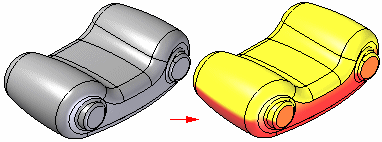
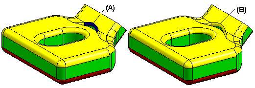

Show Draft Face Analysis command
Displays colors on the model based on the surface angles with respect to a draft plane you define. This is a visualization of whether a part can be removed from a mold or die. To display draft face analysis colors, shade the active window using the Shaded or Shaded With Visible Edges commands.
Use the Draft Face Analysis Settings command to specify the draft plane, draft angle, and assign the colors to use.

Draft face analysis and view quality
The results of a draft face analysis depends on the current view quality. You might find that the draft face analysis result changes if you modify the view quality. For example, if increasing the view quality using the Sharpen command from 2 to 4, the results for the face shown in the illustration are changed from a crossover face (A) to a positive face (B).

How do I
Display zebra stripes on a partDisplay curvature shading on a model
Visualize a surface
Learn more
Evaluating surfacesEvaluating and repairing foreign data
Look up more details
Show Zebra Stripes commandZebra Stripes Settings command
Show Curvature Shading command
Curvature Shading Settings command
Curvature Shading Settings Dialog Box
Draft Face Analysis command bar
Draft Face Analysis dialog box
Draft Face Analysis Settings command
Surface Visualization command
Surface Visualization Settings dialog box